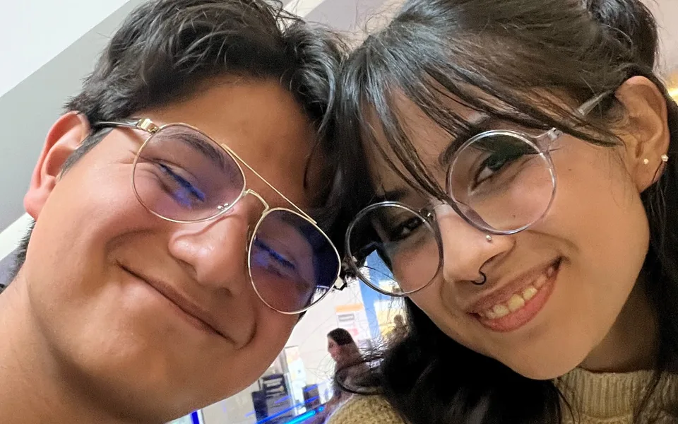

Todas las citas
Todas las citas

Burbujas en Vértice
📍 TlaxcalaSoplando burbujas en Vértice, un reloj de regalo, la iglesia y el regreso juntitos en la combi.
Leer recuerdo →Pasito a patito
📍 TlaxcalaUna paletita en la cafetería, las mesitas de la plaza, unos tacos y vueltas por el centro.
Leer recuerdo →Biblioteca, café y Casa de la Cultura
📍 TlaxcalaUn café en la biblioteca de su facultad y una tarde en la Casa de la Cultura.
Leer recuerdo →